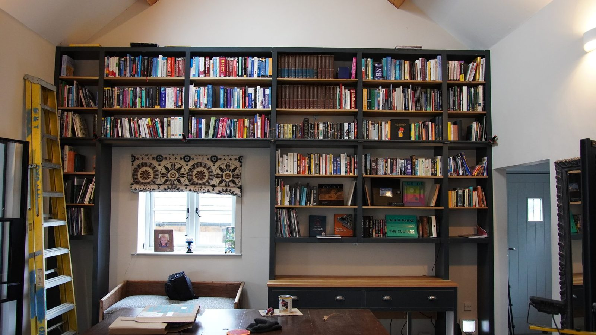
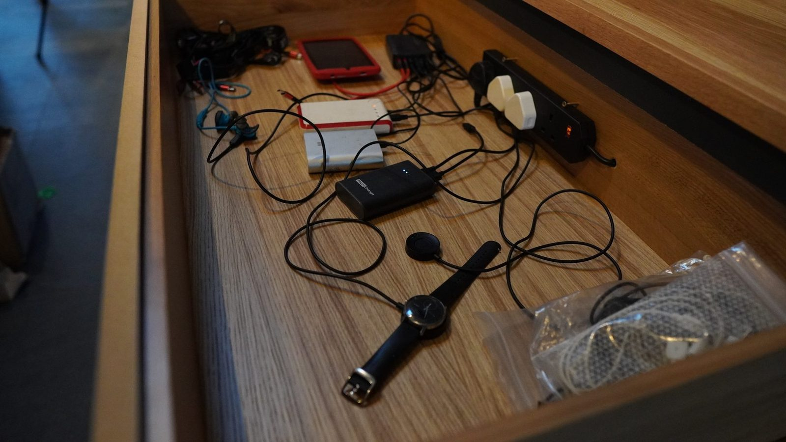
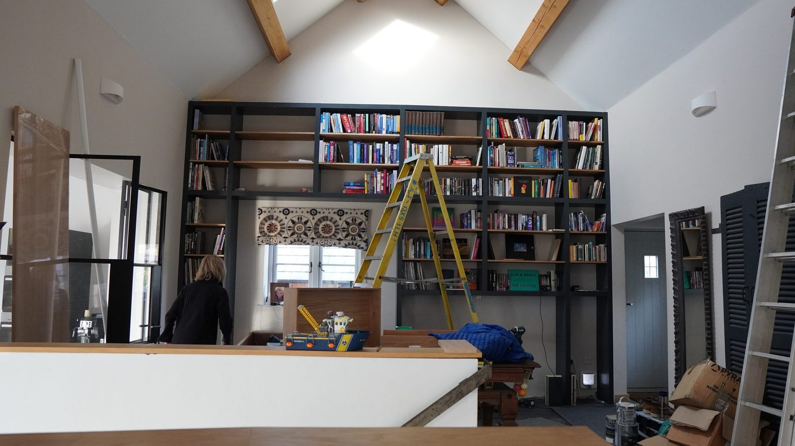
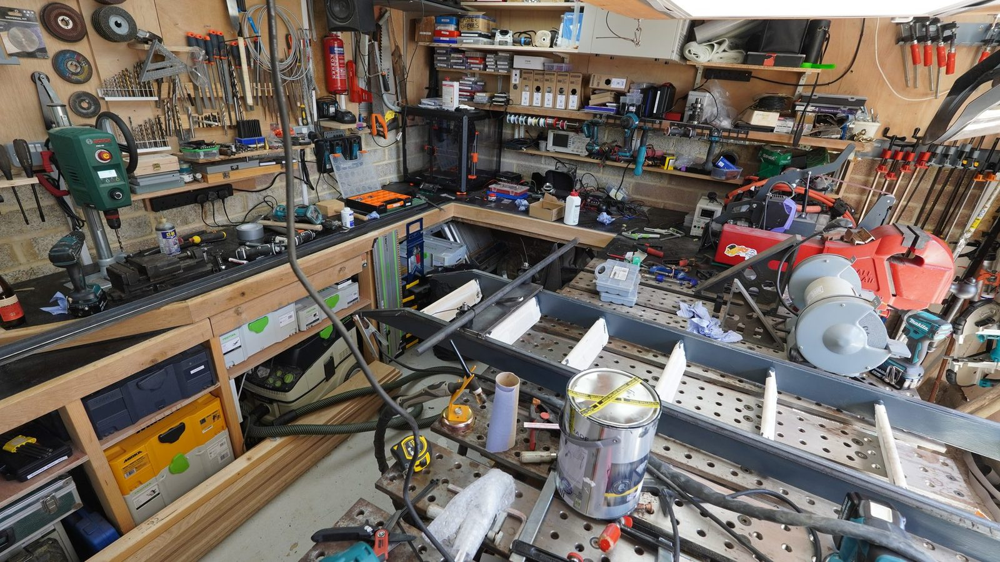

Panel work
Woodwork / installation / rolling ladder
Mega Book Case
Wall-sized bookcase. Built in sections, fitted round a window, extended into a low console, filled with books, then given a rolling ladder because shelves can always get more unreasonable.
Turned into a campaign rather than a project. Panels, carcasses, wall fixing, shelf runs, drawers, cable routing, then a ladder that needed its own machining and welding.

- Timber
- —
- Dimensions
- —
- Joinery
- —
- Ladder hardware
- —
- Finish
- —
- Build time
- —
What went wrong
To be written up.
What I would change
To be written up.
Main build
From panels to a wall of shelves
The early work is quiet and repetitive. Cut panels, make carcasses, keep the edges straight, slowly turn flat sheet into something big enough to change the room.
Wall fitting
Laser lines and tall uprights
Shelves
Shelves going in
Console
The low cabinet
Rolling ladder
The project inside the project.
The ladder was not necessary. It became its own sub-project - rollers, brackets, rails - and an excuse to use the lathe for something that ends up in the living room.
Machining
Roller hardware on the lathe
Welding
Ladder frame in the workshop
Front face
Layout before commitment
A lot of measuring before anything looks like furniture. Lay it out, check it, check it again. The next cut is the expensive one.
Scale
A room-sized tolerance stack.
A small cabinet forgives you. A full-height wall does not - every small error has somewhere to travel. The whole build is about controlling that creep.
Integration
Working around the window
Had to frame the existing window, leave the console usable underneath, and line up with the steel-and-glass doors already there.
Mechanics
Then it needed a ladder
Once the shelves went high enough the ladder became irresistible. A normal person buys one. This one got custom hardware, machining and welding.
Payoff
What it changed
Loaded with books it stopped being furniture and started being part of the room. Also swallowed an entire wall, which was the idea.






